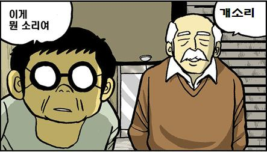

About Author

Insanehong
blog: http://insanehong.kr
twitter: @insanehong
github: insanehong.github.com
- NAVER Corporation, Front-End Engineer(2013~)
- Like Javascript, Dart, HTML5, CSS3,Responsive Web, Haroopress, Frends, Lean Startup, Open Source
- Hackrslab co-founder
- About me http://about.me/insanehong
About this Article
Date Released:
Saturday, April 13 2013 5:15 AM연봉 협상테이블에서 나온 업계평균이라는 말
업계 평균 맞춰 드렸어요.
몇년전 12월 어느날, 인사팀으로 부터 연락이 왔다. 김대리에게 인사팀에서 연락할 이유는 단하나, 1월 입사자 였던 김대리의 연봉협상을 위해서이다.
인사팀 직원이 내년 연봉계약서에 기제될 금액과 함께 내던진 한마디는 김대리에게 충격으로 다가왔다.
"회사에서 제시하는 김대리님의 내년 연봉은 000만원입니다. 업계 평균 맞춰 드린 금액이에요."
IT 업계 상위 1% 업체들과 동등한 대우를 바란 것도 아니고 당시 중견기업에 속하던 회사에 맞춰 당해 진행했던 업무에 기반한 정당한 대우를 해주기를 바랬던 김대리도 크게 불만이 없는 연봉 제안이였지만 마지막 나온 업계평균 이란 그 한마디로 인하여 머리속이 복잡해져 버렸다.

해당년도에 근무하는 동안 "그저 시키는일을 하면서 월급만 받아가면 돼 "라는 생각을 가져본적도 없으며 기본 업무외 전사 보안 강화에 사용된 암호화 모듈을 배포했고 서비스 전반에 걸친 Cross Browsing 이슈 처리등을 처리해으며팀원의 업무편의를 위하여 자발적으로 데이터관리 툴(이후 운영팀에 발각되어 개발팀만이 아닌 서스테이닝 업무에도 사용되었다)등을 만들어 온 김대리의 업무평가가 평타를 쳤던 것일가?
회사내에서 가장 뛰어난 개발자라는 생각을 해본적도 없고 회사에 큰 이익을 가져다준 획기적인 서비스를 만들어낸것은 아니였지만 피고용자 입장에서는 회사가 나를 위해 지불하는 금액에 대해서 최대한 성의를 보인다는 생각을 가져야 하는게 아닌가?
그 당시 김대리는 일단 연봉제안을 수락하고 심각하게 이직을 생각해보게 되었다.(하지만 김대리는 그후로도 2년을 더 해당 업체에 근무 하였다.)
회사원의 이직사유 1위는 급여불만족
회사가 지급할수 있는 최대한의 성의를 보였다, 업무평가에 따라 00% 상승률을 적용 하였다 등이 아닌 업계평균 테이블로 연봉계약을 할것이라면 연봉협상이 아닌 호봉제로 운영하는게 오히려 직원들을 만족 시켜주지 않을가?
취헙포털 사람인에서 조사한 이직사유 1위는 급여 불만족(41%) 이다. 2위에는 불안정한 회사비전, 3위로는 열악한 근무환경등이 차지 했다.
3번의 이직을 경험한 김대리가 해당업체를 이직하게 된 이유는
급여 불만족이 아닌 응답자의 10%정도에 해당하는성취감 부족과좁은 업무영역에 있었다.
아무리 좋은 근무환경,복지제도등을 갖추었다고 해서 연봉을 무시하고 회사를 다니는 사람은 많지 않을 것이다. 기본적으로 본인이 생각하는 최소한의 요구 금액이 있고 그 이하의 금액을 받으면서 능률적으로 일을 하는 사람은 없을 것이라고 생각한다.
그런 의미에서 김대리가 들은 업계 평균 이라는 말은 절대 들어서는 안되는 말이였다. 솔직히 그런 말을 하는 사람이 인사팀에 있다는 것 조차 이해가 되지 않았다.
IT 서비스회사의 자산은 인력이다.
IT 업계에서는 보통 회사의 자산을 자사의 서비스라고 생각하는 경우가 많다. 그리고 개발자는 단순히 코딩기계로 치부해 버리기 일수다.
매일 아침 일곱시시끄러운 알람 시계 소리, 지난밤 회식에서 퍼부어댄 술도 아직 깨지 않은 일곱시, 어젯저녁 이과장과 술한잔에 나누었던 대화가 떠나가질 않고
"야 김대리, 인생을 즐기기 위해선 대체 얼마를 벌어야 되냐?"
Deegie - 힘을내요 김대리 中…
연봉을 얼마를 받아야 하는지 혹은 연봉상승률이 얼마가 되는지는 회사의 규모와 사정에 따라 각가 다를 것이다. 하지만 인력에게 투자할 돈을 아까워 하는 회사라면 일단 다른 조건역시 그다지 볼 필요없다. 연봉을 지워버릴 정도의 파격적인 다른 요소가 존재할리 만무하다.
이 글은 연봉을 더 많이 줘야 한다는 말이 아니다.(물론 많이 주면 좋다) 혹시 이글을 읽으면서 이 글의 주제가 돈이라 생각 했다면 요지를 잘못 파악했거나 김대리의 필력이 후달리는 것을 증명해주는 증거일 것이다.
적어도 최소한 당신을 위해서 회사에서 가능한 최대한의 성의를 보이고 있고, 당신을 우리 회사에 붙잡아 두기 위해 노력하고 있다는 것을 전달해 주려면 연봉협상 테이블에서 김대리가 들었던 어이없는 대사는 나오면 안된다고 생각한다. 업계평균을 맞춰주는게 회사에서 투자하는 최상의 조건이라면 그냥 솔직히 이게 회사가 당신에게 줄수있는 최대치 이다라고 말해주길 바란다.
괜히 어설프게 업계평균이 어쩌고 하는 소리를 지껄이는 것은 오히려 그 사람의 불같은 의욕마저도 꺼트려 버릴것이다. 어차피 업계평균이면 내가 이 회사를 계속 다닐 필요가 있겠는가? 이정도 연봉을 주는 곳은 엄청 많지만 우리는 니가 이 회사에서 일하길 바래 라는 정보를 직원에게 줄 필요는 없다. 김대리와 같은 사람은 어차피 업계평균을 받을거면 주위에 널린 업계평균을 지원하는 기업중 좀더 재미있고 비전이 좋은 곳을 쉽게 찾아서 떠나버릴것이다.
IT 개발자 김대리 여러분 오늘도 힘냅시다